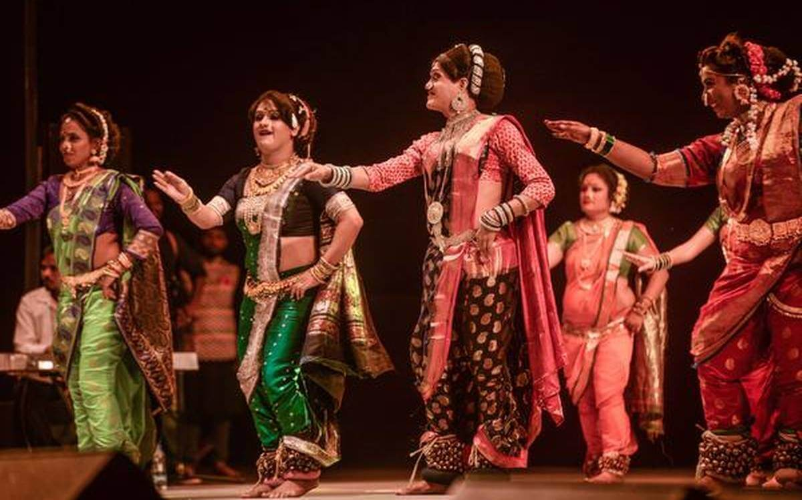
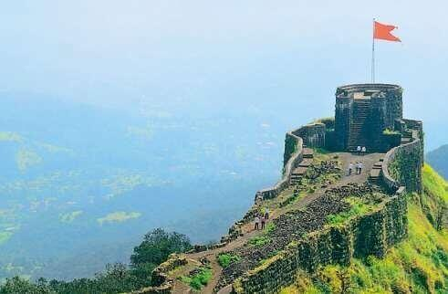

पोशाख : महाराष्ट्राचा पारंपरिक पोशाख म्हणून पुरुष धोतर, कुर्ता, सुती सदरा,डोक्याला फेटा, बंडी तर महिला चोळी, नऊवारी साडी, लुगडे परिधान करतात.
आहार : मराठी माणसांच्या आहारात प्रामुख्याने ज्वारी, बाजरी, तांदूळ, गहू इत्यादी धान्यांचा समावेश होतो. महाराष्ट्र मुख्यत्वे पुरणपोळीसाठी प्रसिध्द आहे. तसेच झुणका-भाकर, वडापाव, पावभाजी, मिसळपाव इत्यादी पदार्थ लोकप्रिय आहेत. श्रीखंडाचा उगम सुध्दा महाराष्ट्र्रातच झाला असे म्हणतात. कोल्हापूर हे मुख्यतः तांबडा पांढरा रस्सा साठी प्रसिद्ध आहे
पुरणपोळी
पावभाजी
भाषा : महाराष्ट्राची मराठी ही राज्यभाषा आहे. यासोबतच कोंकणी, वऱ्हाडी, डांगी इत्यादी प्रमुख भाषा आहेत. महाराष्ट्र्रातील बहुसंख्य लोक हिंदी भाषेचे जाणकार आहेत
पारंपरिक नृत्य व संगीत : पोवाडे, लावणी, कोळीगीते, बंजारा होळी, संतांचे अभंग, भजने, कीर्तने प्रसिद्ध आहेत. पोवाडे हे मुख्यतः छत्रपती शिवाजी महाराजांच्या आयुष्यातील प्रसंगांवर असतात. लावणी मुख्यत्वे प्रेम, राजकारण, शोकांतिका, समाजरचना यावर आधारित असते. कोळीगीते हमासेमारी करणाऱ्या लोकांनी करमणुकीसाठी बनवलेली गाणी होत. कोल्हापूरी साज हा एक खास प्रकारचा दागिना असून तो महिलांमध्ये प्रिय आहे.

पर्यटन : महाराष्ट्रातील किल्ले हे लोकांचे मोठे आकर्षण आहे. सिंधुदुर्ग, रायगड, प्रतापगड, दौलताबाद, सिंहगड इत्यादी किल्ले त्यांची रचना, अचूकता, व युद्ध लढण्याच्या योजनांसाठी प्रसिद्ध आहेत. महाराष्ट्रात एकूण युनेस्को ने नोंदवलेल्या चार World Heritage Sites आहेत : अजिंठा लेणी, वेरूळ लेणी, eliphanta गुहा व छत्रपती शिवाजी turminus या. तसेच बिबीका मकबरा, Gateway Of India, Marine Drive इत्यादी प्रेक्षणीय स्थळे आहेत. पंढरपूर येथील श्री विठ्ठल मंदिर, शिर्डीतील साईबाबा, तुळजापुरातील तुळजाभवानी, जेजुरीमधील श्री खंडोबा देवस्थान, पुण्यातील श्रीमंत दगडूशेठ गणपती, अष्टविनायक, अक्कलकोट येथील श्री स्वामी समर्थ देवस्थान, शेगाव येथील श्री गजानन महाराज देवस्थान, माहूर येथील श्री रेणुका देवी स्थान,इत्यादी प्रसिद्ध धार्मिक स्थळे आहेत. ताडोबा राष्ट्रीय उद्यान, संजय गांधी राष्ट्रीय उद्यान, राजीव गांधी राष्ट्रीय उद्यान, कळसुबाई हरिश्चंद्रगड अभयारण्य इत्यादी वनविभाग पर्यटन स्थळे आहेत. शिवाय साताऱ्यातील कास पठार, लोणावळा, महाबळेश्वर, सह्याद्री पर्वतरांगेत असलेले कळसुबाई शिखर, सातपुडा पर्वतरांगा ही निसर्गरम्य ठिकाणे आहेत.

प्रतापगड
अजिंठा लेणी
छत्रपती शिवाजी टर्मिनस(CST)
उत्सव : गणेश चतुर्थी, मकर संक्रांत, गुढीपाडवा, दिवाळी, भाऊबीज, नारळी पौर्णिमा, दिवाळी, दसरा, रंगपंचमी, इत्यादी सण आनंदाने साजरे होतात. मराठी संस्कृतीत श्रावण सणाला अनन्य साधारण महत्व आहे. याची सुरुवात नागपंचमी ने होते व शेवट बैलपोळ्याने होतो. रक्षाबंधन व गोकुळाष्टमी हे प्रमुख सणही याच महिन्यात येतात.
कला : औरंगाबादमध्ये कापूस व रेशीम पासून बनवलेले दर्जेदार कापड, मशरु आणि हिमरू विणकाम सुबक आहे. कोल्हापुरी चपला त्यांची साधी शैली, टिकाऊपणा, चामड्याची गुणवत्ता व त्यातून येणारा विशिष्ट आवाजासाठी ओळखल्या जातात. गेल्या दोन हजार वर्षांपासून बनवल्या जाणाऱ्या पैठणी साड्या त्यांची सुबक रेशीम कामासाठी लोकप्रिय आहेत.
राज्यात ठाणे जिल्ह्यातील राहणाऱ्या वारली जमातींनी केलेल्या वारली चित्रकला जगप्रसिद्ध आहेत. ती चित्रे एक कथा सांगत असतात. ही चित्रे अगदी सध्या भौमितिक आकृत्यांचा वापर करून काढलेली असतात.
सोलापूर हे चादरांसाठी प्रसिद्ध आहे. तसेच महाराष्ट्रातील कोल्हापुरी चप्पल लोकप्रिय आहे.